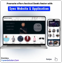
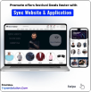
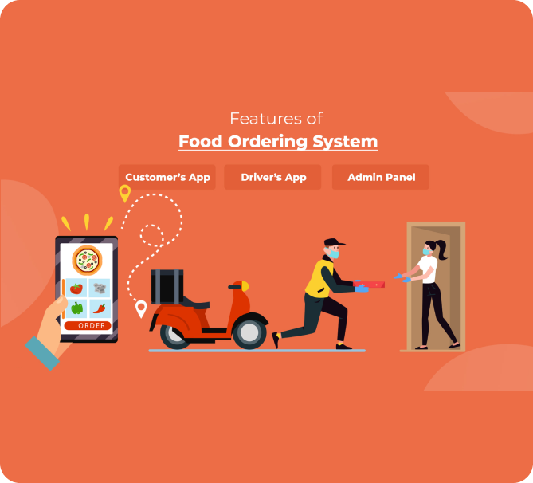
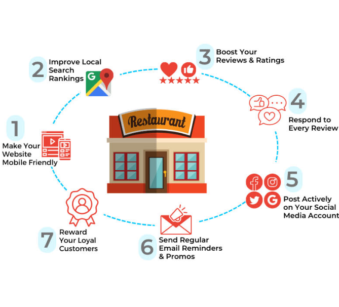

Creating a Seamless Brand Journey for Customers: Online Ordering to In-Store Dining
Maintaining consistency across multiple restaurant locations is crucial for building a strong brand identity and providing a reliable customer experience. When it comes to online orders, consistency is even more important because customers expect the same quality, accuracy, and speed regardless of which location they order from. This blog will outline strategies for ensuring that your multi-location restaurant delivers consistent online orders every time.
1. Provide a Memorable In-Store Experience
The in-store experience is where your brand comes to life. Ensure that it reflects your brand’s values and promises.
- Design the Space to Match Your Brand: Your restaurant’s interior design should be a physical manifestation of your brand. Whether it’s rustic, modern, or family-oriented, the design should evoke the same feelings as your digital presence.
- Use Branded Packaging and Collateral: From menu covers to takeout bags, use branded materials that reinforce your visual identity.
- Create a Signature Customer Service Experience: Train your staff to deliver service that aligns with your brand’s promises. For example, if your brand is known for being eco-friendly, educate your staff on sustainable practices and how to communicate them to customers.
2. Collect and Respond to Customer Feedback
Customer feedback is invaluable for understanding how your brand is perceived. Use it to identify gaps between your intended brand identity and customer experiences.
- Monitor Online Reviews and Social Media Mentions: Use tools like Google Alerts and social media monitoring platforms to track what customers are saying about your brand.
- Incorporate Feedback into Your Brand Strategy: Use feedback to refine your brand identity and ensure that your messaging and visual elements resonate with your target audience.
- Respond Consistently: Whether it’s a positive review or a complaint, respond to customer feedback in a manner consistent with your brand voice. This shows that you care about their experience and reinforces your brand’s values.
3. Create a Consistent Visual Identity
Your restaurant’s visual identity is often the first thing customers notice, whether it’s your logo, menu design, or social media graphics. To establish a memorable brand, ensure that your visual elements are cohesive and consistent.
- Design a Distinct Logo: Your logo is the cornerstone of your visual identity. It should be simple, easily recognizable, and reflective of your restaurant’s personality.
- Choose a Color Palette: Use a consistent color scheme across all platforms, from your website to printed menus and in-store decor. Colors evoke emotions and associations, so choose a palette that aligns with your brand values (e.g., green for sustainability, red for passion).
- Select Typography Carefully: Your font choices should complement your brand’s style. Use the same fonts across your website, social media, and printed materials for a cohesive look.
- Create Brand Guidelines: Develop a brand style guide that outlines how your visual elements should be used. This ensures that your brand looks the same whether it’s displayed on a billboard or a social media post.
4. Leverage Technology for Real-Time Monitoring and Adjustments
Technology can help you monitor, analyze, and adjust processes in real-time, making it easier to maintain consistency.
- Use Real-Time Order Tracking: Implement real-time order tracking for customers and staff to monitor the progress of orders. This transparency helps ensure that orders are prepared and delivered on time.
- Integrate Feedback Systems: Set up a system to collect customer feedback for each location. Use this data to identify inconsistencies and take corrective action immediately.
- Invest in Inventory Management Tools: Use inventory management software that syncs across all locations. This ensures that each branch has the ingredients they need to prepare orders correctly.
5. Leverage Technology for Real-Time Monitoring and Adjustments
The final touchpoint in the online ordering process is delivery or pickup. A consistent experience here is just as important as food quality and order accuracy.
- Set Standard Delivery Protocols: Whether using in-house drivers or third-party services, establish clear delivery protocols for handling food, communicating with customers, and managing delays.
- Optimize Pickup Processes: Ensure that all locations have a designated area for order pickups, with clear signage and instructions. This minimizes confusion and improves the pickup experience.
- Maintain Uniform Packaging and Branding: Use the same packaging materials, bags, and delivery notes for every order to maintain brand consistency and a professional appearance.

Amit Lakahani
CEO & Founder of
Tryzen Solution

posts
followers
following
TryzenSolution
We help to create üéÅ E-commerce & restaurant owners to create website and application to üöÄ grow business üíª.

 



Other Important Blogs
-

how to avoid 3rd party delivery charge and i can my Save 25% Delivery Costs for my Restaurant.
-

How to Choose the Right Online Ordering Platform like Wordpress, Shopify or customs solution
-

How to Choose the Right Online Ordering Platform like Wordpress, Shopify or customs solution
-

Creating a Unified Brand Experience: Connecting Your Restaurant’s Online and Offline Presence
-

How Technology is Shaping the Future of the and how Trends Redefining Restaurant Industry
-

Top 10 SEO Mistakes Restaurant Owners make to Boost there Restaurant’s Online.